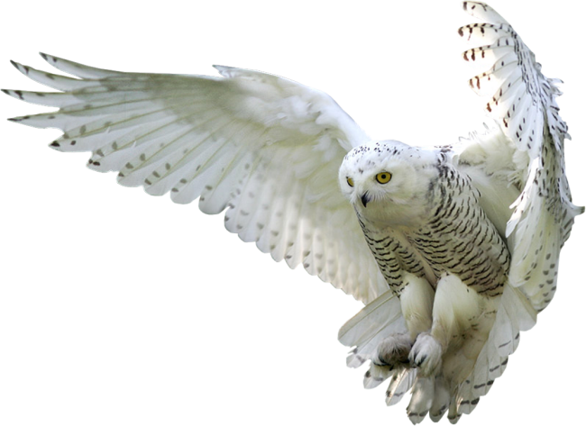

Los búhos son aves rapaces nocturnas que pertenecen a la familia Strigidae. Se caracterizan por sus grandes ojos frontales, que les proporcionan una excelente visión nocturna, y por su cabeza redonda que puede girar hasta 270 grados. Estas aves son conocidas por su capacidad de volar silenciosamente gracias a las plumas especialmente adaptadas en sus alas. Existen más de 200 especies de búhos en todo el mundo, ocupando una variedad de hábitats desde bosques densos hasta desiertos. Son depredadores eficaces, alimentándose principalmente de pequeños mamíferos, aves, insectos y otras criaturas pequeñas. Los búhos también tienen un papel cultural significativo en muchas sociedades, a menudo asociados con la sabiduría y el misterio.
Haz un quiz para que puedas comprobar cuanto sabes de los búhos! 